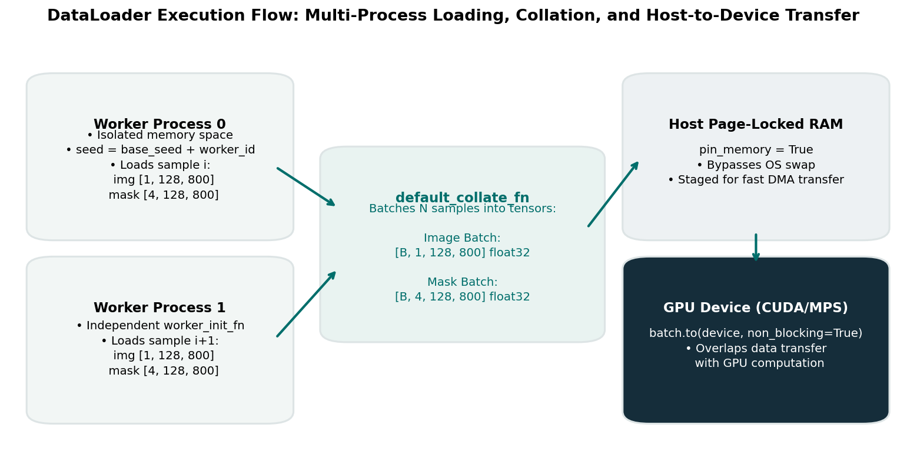

Batching, DataLoaders, and Image-Level Isolation
Once your PyTorch Dataset can reliably decode individual images and defect masks into [C, H, W] tensors, the next engineering challenge is feeding them efficiently into your neural network. Modern deep learning accelerators (GPUs and TPUs) rely on batched tensor operations to achieve massive parallel throughput.
In this guide, you will learn how the PyTorch DataLoader collates individual samples into 4D batch tensors, how multi-process worker mechanics function, and why image-level isolation is the single most critical guardrail against subtle validation data leakage.
1. Motivation: The Mechanics of Batching
Training a neural network with individual images (\(B=1\)) is computationally inefficient. GPUs contain thousands of compute cores designed for SIMD (Single Instruction, Multiple Data) operations. Minibatch gradient descent averages gradients across \(B\) independent samples, reducing gradient variance and allowing large matrix multiplications:
For our industrial strip dataset, this translates to:
- Input Image Batch: \([B, 1, 128, 800]\) in
torch.float32 - Target Mask Batch: \([B, 4, 128, 800]\) in
torch.float32
Managing this batch assembly requires careful orchestration of CPU multiprocessing, system memory pinning, and GPU data transfers.
2. Image-Level Isolation: The Long-Format Split Hazard
In standard computer vision datasets, each row in an annotation CSV typically corresponds to a distinct image. In our industrial surface anomaly dataset, each image spans four consecutive rows in train.csv (one per defect class).
train.csv Row Layout:
Row 0: STRIP_0001, defect_a, NaN
Row 1: STRIP_0001, defect_b, NaN
Row 2: STRIP_0001, defect_c, "100 20 ..." <-- Same physical image!
Row 3: STRIP_0001, defect_d, NaN
Row 4: STRIP_0002, defect_a, NaN
...The Catastrophic Failure: Row-Level Random Splitting
If you apply a naive splitting function (such as sklearn.model_selection.train_test_split) directly to the rows of train.csv, rows belonging to STRIP_0001 will be randomly distributed across both partitions:
- Train Split: receives Row 0 (
defect_a), Row 1 (defect_b), Row 3 (defect_d) - Validation Split: receives Row 2 (
defect_c)
What happens during training?
- The training loop loads
STRIP_0001.jpgfrom disk and updates weights based on rows 0, 1, and 3. - The validation loop loads
STRIP_0001.jpgand evaluates row 2. - Because the network has already observed the exact physical surface texture, rolling grain, and lighting of
STRIP_0001.jpgduring training, your validation metrics will appear artificially high.Golden Rule of Dataset Splitting: The train/validation split must take place at the Image ID level, strictly before instantiating any
DatasetorDataLoaderobjects.
# The Disjoint Isolation Assertion
train_ids = set(train_dataset.image_ids)
val_ids = set(val_dataset.image_ids)
assert len(train_ids.intersection(val_ids)) == 0, "FATAL DATA LEAK: Overlapping image IDs detected!"3. The DataLoader Architecture
The PyTorch DataLoader manages asynchronous multi-process loading and tensor collation.

Figure 2.1: Multi-process DataLoader execution flow: worker processes load and transform samples in parallel, passing them to the main process for collation, memory pinning, and non-blocking GPU transfer.Key DataLoader Parameters:
1. batch_size
Determines the number of samples grouped into one forward/backward pass.
- Larger batch sizes (\(B=16, 32\)) stabilize batch normalization statistics and increase GPU utilization.
- Smaller batch sizes (\(B=4, 8\)) consume less VRAM and introduce stochastic regularization, but increase gradient variance.
2. shuffle
- Training: Set
shuffle=True. Randomizing the sequence of samples prevents cyclical optimization paths and breaks correlations between adjacent batches. - Validation: Set
shuffle=False. Validation evaluates fixed model performance on a static dataset; shuffling adds unnecessary CPU overhead.
3. num_workers
Controls the number of background worker subprocesses spawned to load images and decode RLE masks.
num_workers=0: Data loading occurs synchronously in the main Python process. The GPU sits completely idle while the CPU reads images from disk and runs augmentations.num_workers=2or4: Background processes pre-load upcoming batches while the GPU computes the current forward/backward pass.
4. pin_memory=True
Allocates batch tensors in host page-locked (pinned) system memory.
- Pinned memory bypasses OS virtual memory paging, enabling hardware Direct Memory Access (DMA) controllers to stream data directly into GPU VRAM.
- Paired with
batch["image"].to(device, non_blocking=True), data transfers execute concurrently with GPU kernel execution.
5. worker_init_fn: Reproducibility Across Subprocesses
When using multi-worker data loading, Python's random and NumPy's np.random generators in worker processes inherit identical seeds from the parent process by default. Without an explicit worker_init_fn, every worker process will apply the exact same sequence of random augmentations!
def seed_worker(worker_id):
worker_seed = torch.initial_seed() % 2**32
np.random.seed(worker_seed)
random.seed(worker_seed)4. Batch Memory Footprint Calculations
Before selecting a batch size, calculate your tensor memory requirements. For a batch of size \(B\) with single-channel images and 4-channel masks:
| Batch Size (\(B\)) | Image Batch Tensor | Mask Batch Tensor | Combined Batch Host Memory |
|---|---|---|---|
| \(B = 4\) | \(1.60 \text{ MB}\) | \(6.40 \text{ MB}\) | \(8.00 \text{ MB}\) |
| \(B = 8\) | \(3.20 \text{ MB}\) | \(12.80 \text{ MB}\) | \(16.00 \text{ MB}\) |
| \(B = 16\) | \(6.40 \text{ MB}\) | \(25.60 \text{ MB}\) | \(32.00 \text{ MB}\) |
| \(B = 32\) | \(12.80 \text{ MB}\) | \(51.20 \text{ MB}\) | \(64.00 \text{ MB}\) |
Notice that the raw batch tensors are lightweight. The primary VRAM consumer during training is intermediate activation feature maps retained for backpropagation, not the input batch itself.
5. Custom Collation: Why Default Collate Works
By default, PyTorch uses torch.utils.data.dataloader.default_collate. If your Dataset.__getitem__ returns a dictionary:
{
"image_id": "STRIP_0042",
"image": torch.Tensor(1, 128, 800),
"mask": torch.Tensor(4, 128, 800)
}default_collate function inspects the types:
torch.Tensorobjects are stacked along a new 0th dimension: \([B, 1, 128, 800]\) and \([B, 4, 128, 800]\).- Strings (
image_id) are assembled into a Python list of strings:["STRIP_0042", "STRIP_0043", ...].
You only need a custom collate_fn if you introduce variable-length metadata or bounding boxes. For fixed-size industrial strip tensors, default_collate is optimal.
6. Common Mistakes and Diagnostics
| Bug / Failure Mode | Root Cause | Observable Symptom | Practical Diagnostic |
|---|---|---|---|
| Row-Level Leakage | Splitting train.csv rows directly without grouping by image_id. |
Validation score starts at \(>0.85\) on epoch 1, but test score is near 0. | Assert len(set(train_ids) & set(val_ids)) == 0. |
| Worker Process Deadlock | OpenCV multi-threading conflicting with PyTorch multiprocessing fork. | DataLoader freezes indefinitely on batch 1 with 100% CPU usage. | Call cv2.setNumThreads(0) at the beginning of your script. |
| Identical Augmentation Streams | Omitting worker_init_fn with multi-worker loading. |
Workers apply identical augmentations to different images. | Inspect random numbers generated inside workers across epochs. |
| VRAM Out-of-Memory (OOM) | Batch size too large for GPU VRAM during backward pass. | RuntimeError: CUDA out of memory during loss.backward(). |
Halve your batch_size or use gradient accumulation. |
| Unshuffled Training Batches | Setting shuffle=False on the training DataLoader. |
Training loss oscillates erratically or plateaus early. | Verify shuffle=True on training loader, shuffle=False on validation loader. |
7. Decisions You Must Make
- Worker Count Tuning: Benchmark data loading speed on your training machine:
- Run 100 batches with
num_workers=0, 2, 4. - Measure batches loaded per second: \(\text{throughput} = \frac{N_{\text{batches}}}{\text{elapsed\_time}}\).
- Select the lowest worker count that saturates your GPU without consuming excessive system RAM.
- Run 100 batches with
- Batch Size vs. Gradient Accumulation: If your target GPU has limited VRAM (e.g., 8 GB or 16 GB), you may be constrained to \(B=4\) or \(B=8\). If you require the gradient stability of \(B=16\), implement gradient accumulation:
# Simulate effective batch size = micro_batch * accumulation_steps loss = loss / accumulation_steps loss.backward() if (step + 1) % accumulation_steps == 0: optimizer.step() optimizer.zero_grad()
8. Try It: Verify Batch Collation and Isolation on Toy Data
Run this self-contained diagnostic snippet to verify that your DataLoader collates tensors properly and that your train/val partitions are strictly isolated:
import pandas as pd
import torch
from torch.utils.data import Dataset, DataLoader
class ToyDataset(Dataset):
def __init__(self, ids):
self.ids = ids
def __len__(self):
return len(self.ids)
def __getitem__(self, idx):
return {
"image_id": self.ids[idx],
"image": torch.full((1, 128, 800), idx, dtype=torch.float32),
"mask": torch.zeros((4, 128, 800), dtype=torch.float32),
}
# Fictional image IDs
all_ids = [f"STRIP_{i:04d}" for i in range(10)]
# Image-level 80/20 split
train_ids = all_ids[:8]
val_ids = all_ids[8:]
# 1. Isolation check
assert len(set(train_ids).intersection(set(val_ids))) == 0, "Leakage detected!"
print(f"Split verified: {len(train_ids)} train images, {len(val_ids)} val images. Disjoint: TRUE.")
# 2. Batch collation check
train_loader = DataLoader(ToyDataset(train_ids), batch_size=4, shuffle=True)
batch = next(iter(train_loader))
print(f"Batch images shape: {tuple(batch['image'].shape)} [B, C, H, W]")
print(f"Batch masks shape: {tuple(batch['mask'].shape)} [B, C, H, W]")
print(f"Batch IDs: {batch['image_id']}")
assert batch["image"].shape == (4, 1, 128, 800), "Image batch shape error!"
assert batch["mask"].shape == (4, 4, 128, 800), "Mask batch shape error!"
print("✓ DataLoader batch collation verified successfully!")9. Authoritative Documentation & References
- PyTorch
torch.utils.data.DataLoader: DataLoader API Reference - PyTorch Reproducibility & Multiprocessing: Reproducibility Notes
- CUDA Pinned Memory and Asynchronous Transfers: Memory Management